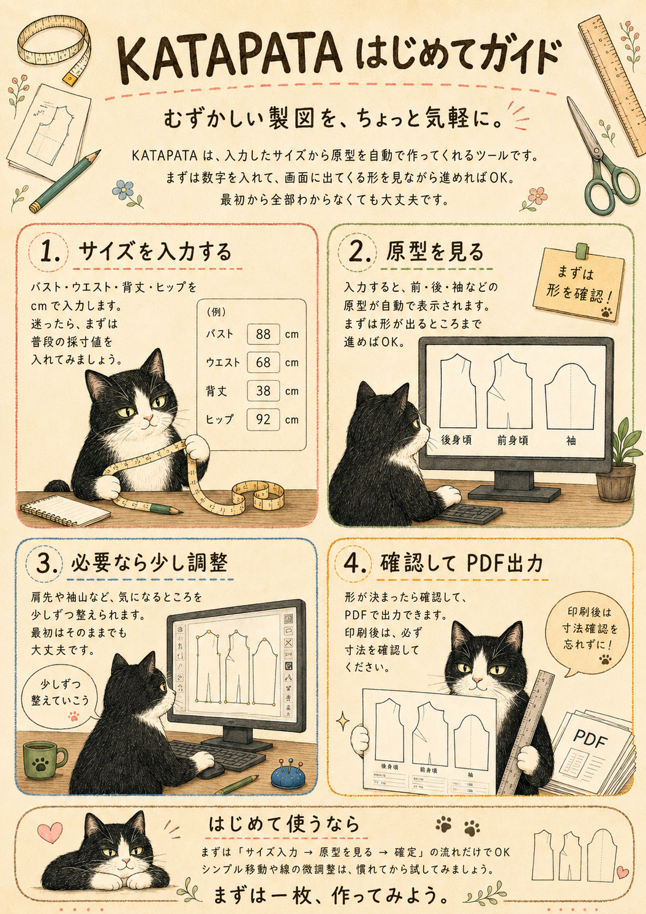

はじめての方へ
KATAPATAは、むずかしい製図を、ちょっと気軽に。
入力したサイズから、あなたの原型を自動で作ってくれるツールです。
まずはガイドを読んで、気軽に始めてみましょう。

基本の流れ
サイズを入力する
バスト、ウエスト、背丈など、必要な寸法をcm単位で入力します。迷ったら、まずは普段の採寸値で大丈夫です。
原型を見る
画面に表示された原型を確認します。前身頃、後身頃、袖などを切り替えながら確認できます。
必要なら少し調整する
肩先や袖山など、気になるところを少しずつ調整できます。最初はそのまま進めてもOKです。
確認してPDF出力
形が決まったら、印刷前に必ず寸法を確認してからPDF出力へ進みます。